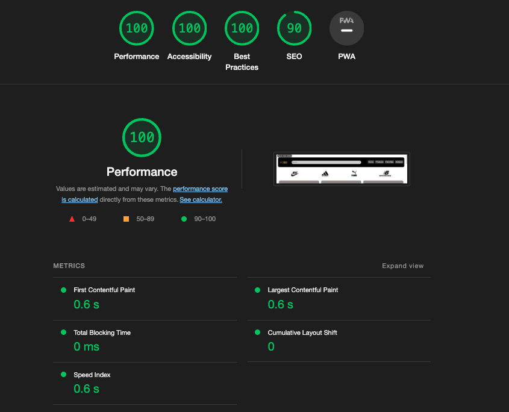

Google Trends-nøkkelord
Her er de nøkkelordene jeg har valgt basert på Google Trends-analysen:
- Nøkkelord 1: [Football boot] - Dette er famous eller relevant søke ord, som mange bruker når de skal shoppe for nyr fotball sko. Det er nesten 90-150 pesroner hverdag som søker det.
- Nøkkelord 2: [Nike] - Nike er og et veldig kjent brand som mange søker. De siste 7 dagene så har det vert 150-200 personer daglig som søker det ordet.
- Nøkkelord 2: [Cristiano Ronaldo shoes] - Ronaldo er per dag den mest kjent personen i denne kloden, og det er veldigmange som søker navnet hans eller vil kjøpe skoene har bruker, siden han er et levende legende.
Lighthouse analyse
Først så tar vi alle screen shots før endringer på noen av SEO-analysen(Mobil-First)
- Forsiden

- Forsiden-2

- Produktside

- Produktside-2

- Favourite

- Favourite-2

Så kan vi gjøre det samme med Desktop før endringene


Dette er da analysen for UU. Den er da fra Wave-aim


ChatGPT analyse av koden med hensyn på SEO og UU.
- Forside

- Produkt

- Fav

sammenligning av Analyseresultater
| Resultater fra ChatGPT | Resultater fra Lighthouse | Resultater fra WebAIM |
|---|---|---|
|
ChatGPT-resultater: |
Lighthouse-resultater: |
WebAIM-resultater: |
Endringer på koden for å få høyere score på SEO analysen
jeg hadde 2 endringer som gjorde at SEO scoren gikk fra 82 til 90+
Ved å slette linkene i footer, og ved å linke Brand-ikonene til en av de tilpassende sidene.
Dette er da resultatene av de 3 sidene etter endringer av koden

Endringer på koden for å få høyere score på UU analysen
Jeg hadde mange alerts på det at jeg linket mange elementer for samme side, så jeg måtte da bytte ut gamle linken til en (#). Så var det alerts på at jeg ikke hadde labels på noen elementer som filtrnene i produktsiden.
Sånn ser det da ut etter endringene